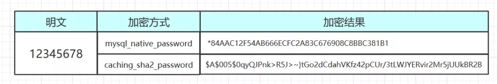

MySQL8 Authentication plugin Change
http://samchu.logdown.com/posts/7425945-mysql8-authentication-plugin-change

這幾天 MySQL 出 8 的版本, 沒想到密碼儲存方式變更了, 頓時一堆人慘叫XD
因為 之前 MySQL 預設儲存密碼的方式是mysql_native_password, 但 8.0 之後 預設的儲存方式為caching_sha2_password, 說是又快又安全啦, 但讓人措手不及, 一堆 SQL 工具 (Navicat) 可能還來不及更新支援 就...
登入失敗!!
Authentication plugin 'caching_sha2_password' cannot be loaded: dlopen(/usr/local/mysql/lib/plugin/caching_sha2_password.so, 2): image not found
方法1 : 就升級上去吧, 變更 JDBC 連結方式
- 首先更新你的 JDBC 驅動 runtime 'mysql:mysql-connector-java:8.0.11'
- 修改你的 driver-class-name , 因為 Loading class `com.mysql.jdbc.Driver'. This is deprecated. , 請你換成新版的 com.mysql.cj.jdbc.Driver
- JDBC URL 增加參數
allowPublicKeyRetrieval=true
完成, 這樣你的 JDBC 就可以搭配使用上caching_sha2_password的機制了
方法2 : 我要最新版但是不要用新的密碼機制
我是用 Docker 啦, 多個參數就可以正常使用了--default-authentication-plugin=mysql_native_password
docker run --name askask-mysql -e MYSQL_DATABASE=askask -e MYSQL_ROOT_PASSWORD=1qaz2wsx -p 3306:3306 -d mysql --default-authentication-plugin=mysql_native_password
收工
方法3 : 修改账户的密碼機制
CREATE DATABASE rep2 CHARACTER SET utf8mb4 COLLATE utf8mb4_unicode_ci;
CREATE USER 'dev'@'%' IDENTIFIED WITH mysql_native_password BY 'Dev.1234';
ALTER USER 'dev'@'%' IDENTIFIED WITH mysql_native_password BY 'password';
GRANT ALL PRIVILEGES ON rep2.* TO 'dev'@'%';
Copyright © 2015 Powered by MWeb, Theme used GitHub CSS.